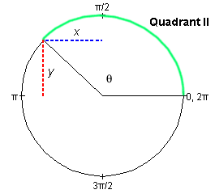

is given in
terms of its scalar components ax and
ay, as illustrated in Figure 3a below. How can
one calculate the angle q formed between
the vector and the positive x-direction, measured in the
positive (counter-clockwise) sense?
is given in
terms of its scalar components ax and
ay, as illustrated in Figure 3a below. How can
one calculate the angle q formed between
the vector and the positive x-direction, measured in the
positive (counter-clockwise) sense?
The definitions of the tangent and cotangent functions can be based on those of the sine and cosine. We will use Figure 3 below, which illustrates the definitions of the sine and cosine in the second quadrant. The angle q, defined by the green arc, is between 90o and 180o or p/2 and p rad.

Figure 3
If the circle is a unit circle, then sin q = y and cos q = x.
Tangent Function
The tangent is defined as the ratio of the sine and the cosine,
tan q = sin q / cos q = y / x.
Since the cosine function in the denominator takes on the value 0 at q = p/2, 3p/2, etc., the tangent function becomes infinite at these points. The period of the tangent function is p, not 2p as for the sine and cosine functions.
About an application of the tangent function to calculating a vector's direction see below.
Cotangent Function
The cotangent is defined as the reciprocal of the tangent or as the ratio of the cosine and the sine,
cot q = 1 / tan q = cos q / sin q = x / y .
Since the sine function in the denominator takes on the value 0 at q = 0, p, 2p, etc., the cotangent function becomes infinite at these points. The period of the cotangent function is p, not 2p as for the sine and cosine functions.
Application of the Tangent Function
Suppose a vector is given in
terms of its scalar components ax and
ay, as illustrated in Figure 3a below. How can
one calculate the angle q formed between
the vector and the positive x-direction, measured in the
positive (counter-clockwise) sense?

Figure 3a
The angle q can be calculated from the equation
tan q = ay / ax .
This equation applies no matter in which quadrant the vector
lies. The equation is analogous to the equation tan q = y / x used in the definition
of the tangent above. The same kind of an equation applies in both
cases because the geometry is analogous, as a comparison of Figures
3 and 3a shows. The only difference is that the magnitude a
of vector is not 1. This
magnitude cancels when taking the ratio ay /
ax.
In the case of a vector in the second quadrant, as in Figure 3a, the tangent is negative. The tangent is negative also in the fourth quadrant. By making a sketch of the vector, given its scalar components, one can resolve the ambiguity.